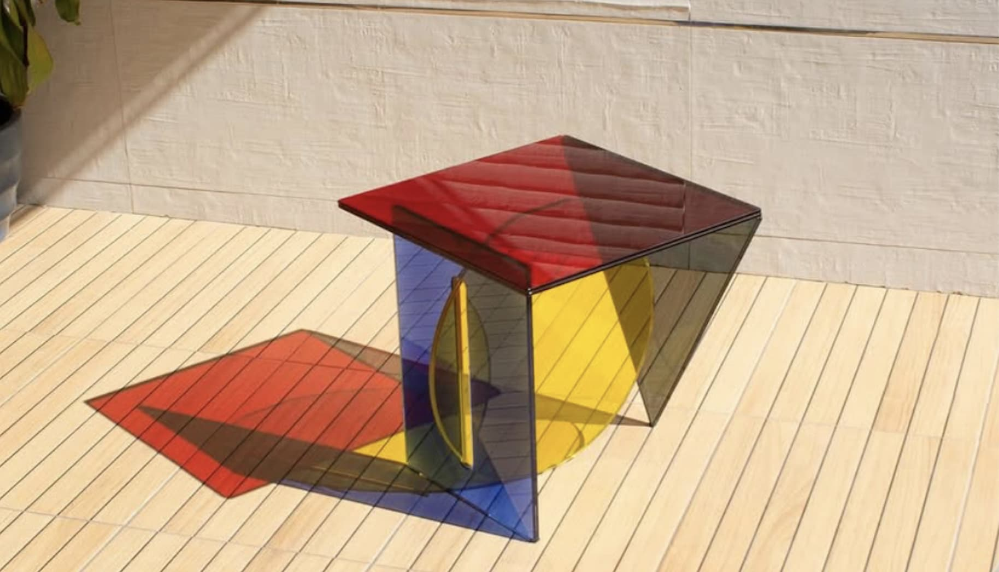
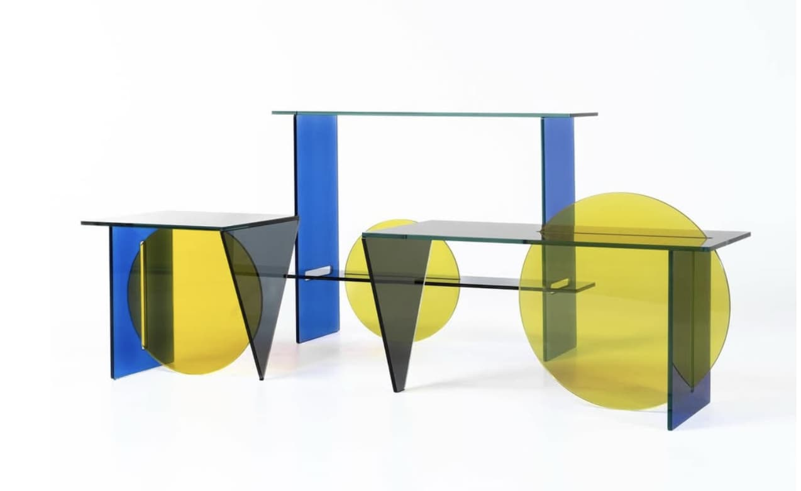
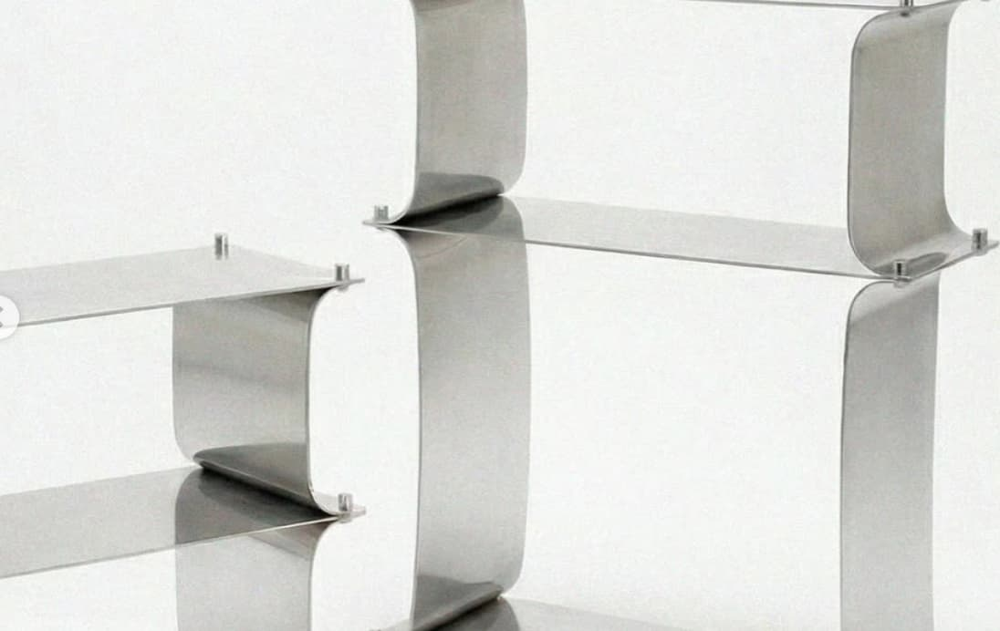

Alan Aguilar Canela

Con base en la ciudad de Puebla, el diseñador de 27 años Alan Aguilar Canela crea mobiliario enfocado en generar espacios emocionalmente envolventes. Su práctica gira en torno a cómo los objetos pueden evocar sensaciones e influir sutilmente en la atmósfera de los espacios habitados. El diseño emocional es un eje central en su trabajo, el cual busca traducir en piezas funcionales con una fuerte carga estética. Su primera colección, A Deeper Void, toma como referencia la geometría de la Bauhaus, reinterpretada desde una visión contemporánea mexicana.
Diseños

Mesa 1,Colección "Deeper Void", Zona maco, 2025

Mesas ,Colección "Deeper Void", Zona maco, 2025

Colección "ikigai", Zona maco, 2026